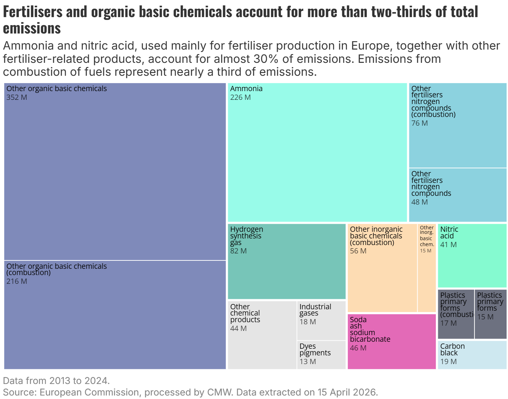
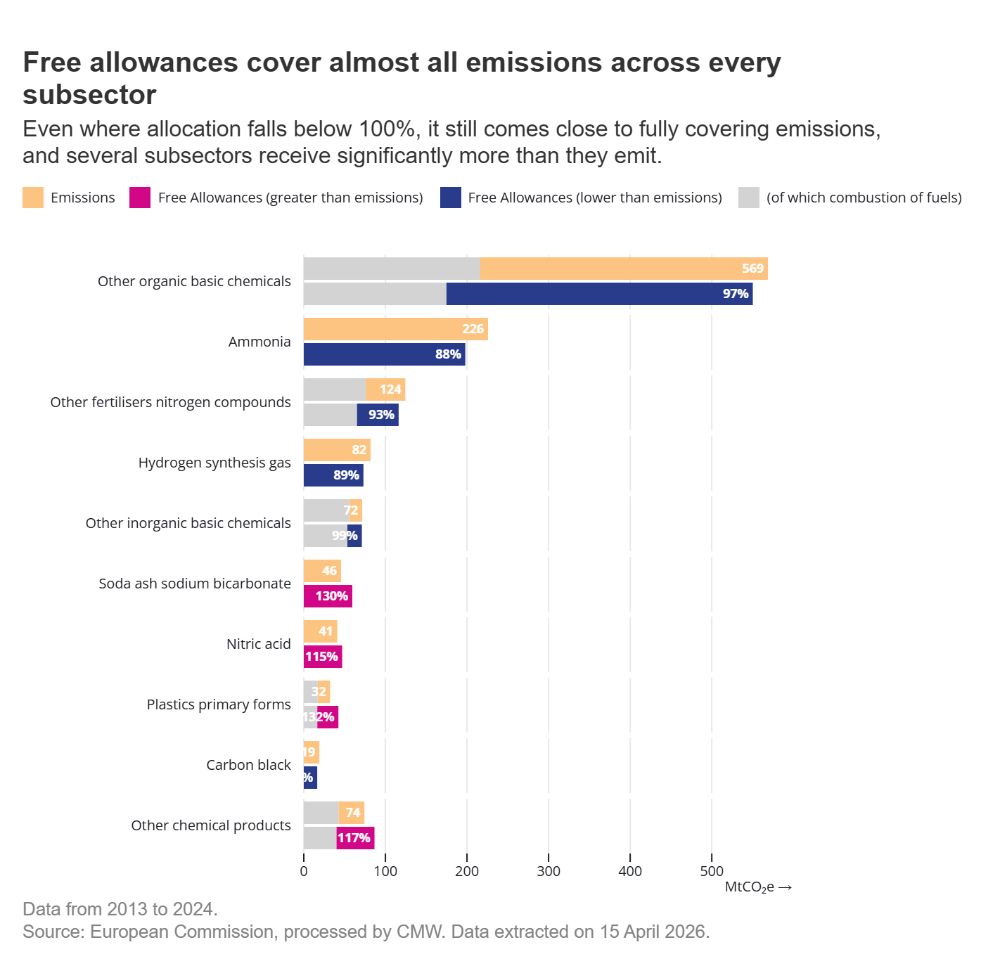
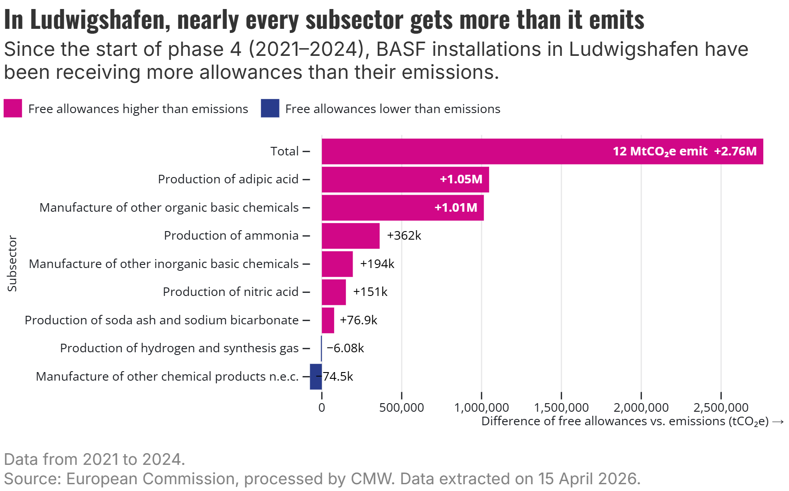
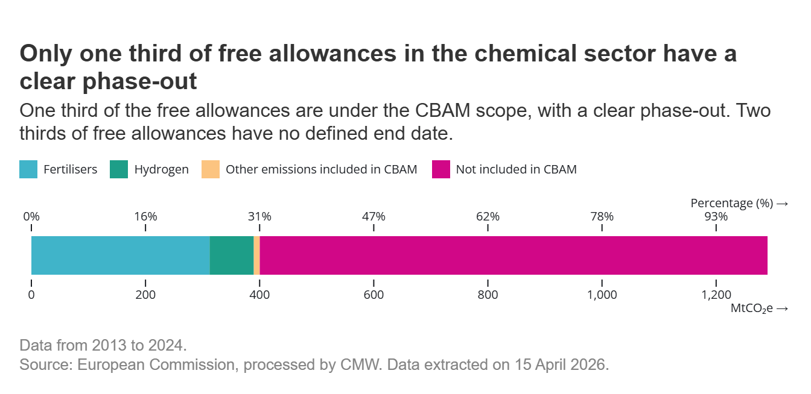

With all the free allowances the European Union’s chemical sector receive under the EU’s Emissions Trading System, it effectively pays no carbon price for its pollution, which is grossly unfair and counterproductive.
Since 2013, the European chemical sector has emitted, on average, the weight of 32 Eiffel Towers in CO₂e — every single day.
In total, that adds up to 1.28 GtCO₂e released into the atmosphere between 2013 and 2024.
98% of those emissions have been covered free of charge, through free allowances.
Worth an estimated €36 billion.
Only 2% was actually paid for.
The EU Emissions Trading System (EU ETS) has helped successfully reduce greenhouse gas (GHG) emissions from covered sectors by half since 2005. This aggregate figure hides huge variations: in stark contrast to the power sector, emissions from industrial sources have only decreased by about 36%.
Our analysis of ETS emissions and allowances received by the European chemical sector tells a demoralising story of what happens when an industry is allowed to pollute with impunity at no cost. At the same time, this sector has openly requested that increases in carbon pricing be halted, arguing that they affect competitiveness, despite global overcapacity and high energy prices being identified as the main reasons. Individual companies illustrate this pattern. BASF, the largest chemical company in Europe, has been profiting from free allowances covering 126% of its emissions from 2021 to 2024, while complaining about carbon prices and opposing any conditionality.
The EU Carbon Border Adjustment Mechanism (CBAM) is meant to fix part of this problem. As CBAM is phased in, it is designed to replace free allowances for the sectors it covers, charging a carbon price on imports instead, so that the EU producers are not undercut by foreign competitors facing no carbon cost. But CBAM does not yet cover the whole chemical sector. Only 30% of the allowances the sector currently receives have a clear phase-out under this mechanism, due to be completed by 2034. For the rest, there is considerable uncertainty.
Even parts of the chemicals industry that will enter CBAM are still receiving a lot of free allocation: fertilisers and hydrogen are set to get another 124 million free allowances from 2026 to 2034. For the roughly 70% of allowances that fall outside CBAM’s scope, no phase-out has been agreed at all. Forecasts show the sector could receive, at least, an additional 220 million free allowances for non-CBAM sectors if those are phased out by 2034, in the same way as CBAM sectors, or up to 519 million if no phase-out plan is defined at all.
A sector that keeps emitting
The production of chemicals emitted 1.3 gigatonnes (billions of metric tonnes) of CO2e from 2013 to 2024, and reductions have been sluggish. Since the beginning of the EU ETS’s phase 3 in 2013, the system's scope has expanded to include new chemical activities and gases, such as carbon dioxide emissions from the production of petrochemicals and ammonia, and nitrous oxide emissions from the production of nitric, adipic, and glyoxylic acid. Despite a 4% increase in 2024, emissions from the chemical sector have decreased by 30% since 2013.
However, this reduction might not have been related to the sector’s decarbonisation. Several major facilities have closed since 2014. The figure below shows that emissions from installations that remained open fell by a more modest 7% between 2013 and 2024. In 2021, emissions spiked by 18% compared to the previous year, driven by the rising use of fossil fuels, and the need to meet recovering post-pandemic demand. Since then, emissions have remained broadly stable.
The sector's biggest reductions occurred in 2022, but this decrease is most likely due to a production decline after Russia’s invasion of Ukraine and its impact on natural gas prices. In 2024, emissions from chemical production increased from the previous year, placing the sector as the fourth-largest industrial emitter. Oil and gas refineries, a critical upstream in the chemicals’ value chain, have topped the emissions’ rank since 2022 and have experienced the lowest reduction since 2013. Both chemicals and refineries have accounted for more than a third of the total industrial emissions in the EU since 2013.
The production of chemicals in the EU is part of the value chain of several industries, such as fertilisers (ammonia and nitric acid), pharmaceuticals and cosmetics (glyoxylic acid), textiles (glyoxal), automobiles, tyres and rubber (carbon black), glass (soda ash), polyester and polyurethane (adipic acid).
Digging into subsector levels, emissions are mostly concentrated in a few sub-sectors. The manufacturing of other organic basic chemicals, covering organic compounds such as hydrocarbons, alcohols, and carboxylic acids produced via processes like thermal cracking and distillation, is the single largest source, accounting for 38% of the total chemical sector emissions. Within this subsector, more than a third of emissions (38%) come specifically from the combustion of fossil fuels.
Fertiliser production is the second major cluster. Ammonia alone accounts for 18% of the sector’s total emissions, and when nitric acid and other fertiliser-related nitrogen compounds are added, this group reaches almost 30% of total emissions. Combustion of fossil fuels also plays a role here, representing 12% of fertiliser-related emissions.
The combustion of fossil fuels is an activity that cuts nearly every part of the chemical industry. In some subsectors, accounts for most of the emissions. In total, the combustion of fossil fuels accounts for nearly a third of the sector’s emissions.

Since 2013, 98% of emissions have been covered by free allowances to chemical companies. More importantly, this gravy train shows no signs of slowing down. In both 2022 and 2023, the chemical sector was overallocated, receiving a total of 105% of its emissions.
Free allowances cover almost all emissions for each of the subsectors, or in some cases even exceed emissions. Notably, combustion of fossil fuels makes up a substantial share of the carbon pollution in several of these subsectors. Yet, under the EU ETS, allowances allocated to energy-related emissions are subject to full auctioning rather than free allocation. The continued presence of energy-related free allocation at subsector-level undercuts the decarbonisation of energy and heat used in the chemical sector.

In the chemical sector, many production processes generate waste gases as byproducts. These gases can be recovered and burned to produce steam or hot water, forms of energy that qualify as measurable heat under EU ETS rules. When those waste gases are produced under a product benchmark, such as those from reactions producing carbon black, acetylene, olefins, or synthesis gas, the installation producing those waste gases receives free allowances and is meant to transfer them to the installation burning the gases for heat. However, whether that transfer always happens and whether the chemical installations handing the allowances over are actually being paid for them (as they have a financial value) is not publicly disclosed.
In other cases, when the process generating the waste gases is not covered by a product benchmark, and the waste gases are sold for heat production to an external installation under the ETS scope, it is the heat installation that receives the free allocation. This is the case of silicon carbide, silicon, phosphorus, and acrylic acid. The production of these materials involves chemical reduction or syntheses that generate waste gases, but are not covered by a product benchmark.
Where are the emissions and who benefits from free allowances?
The concentration of free allowances is not just a sectoral story; it is also a geographic one.
Three countries, the Netherlands (67 MtCO₂e), Germany (61 MtCO₂e), and France (46 MtCO₂e), together have accounted for half of all EU chemical sector emissions since 2021. This reflects the historical geography of European industrial chemistry, where production clusters around port infrastructure, feedstock access, and integrated pipeline networks.
At the city level, the picture sharpens further. Antwerp's chemical installations alone emit more than Italy's entire chemical sector. It hosts 16 chemical installations belonging to several companies, including BASF, Air Liquide, TotalEnergies, and Evonik.
Sittard-Geleen hosts one installation owned by the Saudi Arabian Oil Company that emits almost as much as all Czech chemical installations combined.
Ludwigshafen is home to BASF's main production facility and is also the site that received the second most free allowances in the chemical sector. The German city hosts 43 different installations, 42 of which are owned by BASF. Installations in that hub have received 2.8 million more free allowances than they have emitted since 2021. Two activities drive most of this gap: the production of adipic acid, and the manufacture of other organic basic chemicals, which follows closely behind.

This geographic concentration means that the benefits of free allocation flow to a small number of large industrial clusters.
Since the beginning of phase 4, only 3% of the chemical companies accounted for 50% of all free allowances.
The following 12% of the companies, received 80% of the total free allowances allocated to the chemical sector.
The bottom 621 companies collectively hold only one-fifth of total free allowances.
Additionally, one in three companies have been receiving more allowances than they need to cover their actual emissions since phase 4. During the same period, among the top seven most allocated companies allocated in the chemical sector, they have received in total 13 million more allowances than their emissions, equivalent to €938 million.
BASF is the largest European chemical company and illustrates the scale of what is at stake. It has emitted 22 MtCO₂e since 2021 and received 28 million allowances for free, worth nearly €2 billion. Despite receiving free allowances covering more than its emissions, BASF has publicly cited EU carbon costs as a burden on competitiveness and asked EU leaders to freeze ETS costs. Over the same period, the company announced a share buyback programme valued at €12 billion from 2025 to 2028, six times the value of what it received in free allowances. It has also committed €9 billion to a new mega-factory in Zhanjiang, China, while cutting jobs in Europe.
The EU Carbon Border Adjustment Mechanism (CBAM) was set up to prevent the theoretical risk of carbon leakage while free allowances are phased out from the EU ETS. However, the scopes of the CBAM and the EU ETS do not entirely overlap. In the chemical industry, particularly, only fertilisers and hydrogen are included in the CBAM’s scope. Most of the allowances that are allocated for free have no clear phase-out date in the chemical sector.
The scale of what remains at stake is significant. Fertilisers alone will still receive 109 million allowances between 2026 and 2034, with hydrogen accounting for a further 15 million. But these are the sectors with a defined phase out of free allocation. The remaining 70% of free allowances in the chemical sector have no phase-out timeline. In a scenario in which they are phased out by 2034, the sector would still receive 344 million allowances for free from now until then. Under a scenario with no phase-out until 2040, that figure rises to 642 million.
This matters because the original logic of free allocation was transitional: protect industry from the risk of carbon leakage while waiting for low-emitting alternatives to catch up. For chemicals, the transition has stalled, and large incumbent companies in the sector have no credible plan to deploy the necessary investments to reach climate neutrality in Europe. Emissions are not falling fast enough, overallocation persists, and the mechanism designed to replace free allocation only covers a fraction of the sector.

Europe’s chemical sector has emitted 1.3 gigatonnes of CO₂e since 2013, received free allowances covering 98% of those emissions, and, even in recent years, received more allowances than it actually needed. Meanwhile, the sector’s emissions rose again in 2024. The system is not driving the decarbonisation it was designed to deliver, while companies receive subsidies to pollute for free. The EU ETS revision that will start in July 2026 presents policymakers with a unique opportunity to change this.
The free ride has gone on long enough. Corporate polluters must pay their fair share.